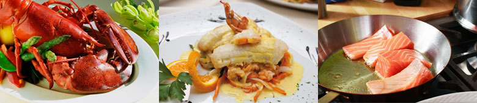
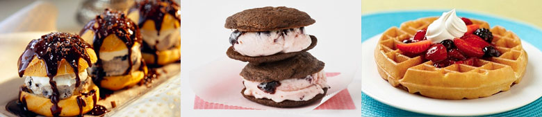
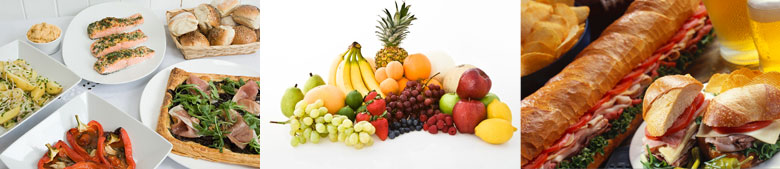

From the morning boats
Seafood Special
Daily catch, charred citrus, garden herbs, and a menu that follows the water.
Meals
Island-grown produce and daily catch shape menus that feel bright, generous, and true to the coast.

From the morning boats
Daily catch, charred citrus, garden herbs, and a menu that follows the water.

Save room
Tropical fruit, dark chocolate, and cool finishes made for a table of friends.

An easy start
Strong coffee, warm breads, fresh fruit, and enough time to plan nothing at all.